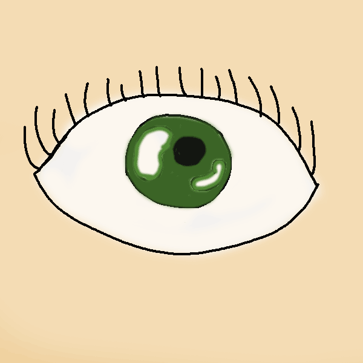
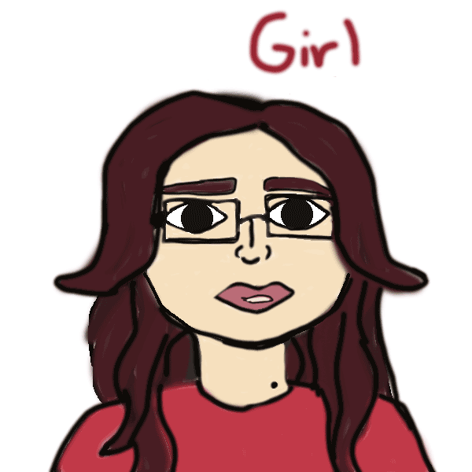

This eye was my first gif, I wanted to work on my eye animation gif howevr I wanted to try something easier first.

this is suppose to be me. I often say "girl" in a lot od sceneiros. whether its a bad or just like an "girl really" which is express in this gif, I just lke saying this a lot.